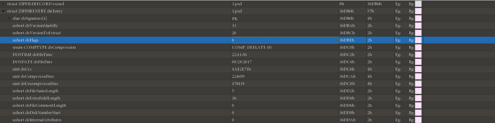

Zip
Структура файла
Файл ZIP в основном состоит из трех частей, соответственно.
| Область данных сжатого исходного файла | Основной каталог | Конец каталога |
|---|---|---|
| заголовок локального файла + данные файла + дескриптор данных | центральный каталог | конец записи центрального каталога |
Каждый сжатый исходный файл или каталог в области данных сжатого исходного файла представляет собой запись, где
- заголовок локального файла - заголовок файла используется для определения начала файла и информации о записанном
сжатом файле. Идентификатор заголовка файла здесь начинается с фиксированного значения
50 4B 03 04(шестнадцатеричное),PK\x03\x04(байты) и также важен для заголовкаZIP. - данные файла - файл данных записывает данные соответствующего сжатого файла
- дескриптор данных - дескриптор данных используется для определения конца сжатого файла. Эта структура появится только если 3 бита поля общего тега в соответствующем заголовке локального файла стоит 1. После сжатия исходных данных файла
- Основной каталог
- Информация каталога записанного сжатого файла и каждая запись области данных соответствует одному фрагменту данных в область данных сжатого исходного файла.
| Смещение | Байты | Описание |
|---|---|---|
| 0 | 4 | Сигнатура заголовка файла центрального каталога = 0x02014b50 |
| 4 | 2 | Версия сделана |
| 6 | 2 | Версия необходимая для извлечения (минимальная) |
| 8 | 2 | Битовый флаг общего назначения |
| 10 | 2 | Метод сжатия |
| 12 | 2 | Время последнего изменения файла |
| 14 | 2 | Дата последнего изменения файла |
| 16 | 4 | CRC-32 |
| 20 | 4 | Сжатый размер |
| 24 | 4 | Несжатый размер |
| 28 | 2 | Длина названия файла (n) |
| 30 | 2 | Длина дополнительного поля (m) |
| 32 | 2 | Длина комментария файла (k) |
| 34 | 2 | Номер диска, с которого начинается файл |
| 36 | 2 | Атрибуты внутреннего файла |
| 38 | 4 | Атрибуты внешнего файла |
| 42 | 4 | Относительное смещение местного заголовка |
| 46 | n | Имя файла |
| 46+n | m | Дополнительное поле |
| 46+n+m | k | Комментарий файла |
- Конец записи центрального каталога(EOCD) идентификатор конца файла
- Конец идентификатора каталога находится в конце всего пакета архива и используется для обозначения конца сжатых данных каталога. Каждый сжатый файл должен иметь одну и только одну EOCD запись.
Основная атака
Грубая сила
Существует две утилиты:
- Windows - ARCHPR

Грубый перебор, запуск словарей, атаки с открытым текстом, все.
- Linux - fcrackzip
-b Указывает, что режим разорван,
-c1 указывает тип пароля как чистое число, другие типы могут быть rtfm,
-u этот параметр очень важен или не отображает взломанный пароль,
-l 5-6 можно указать длину
root@kali:fcrackzip -b -c1 -u test.zip
CRC32
Принцип
CRC сам по себе означает избыточный контрольный код,
а CRC32 означает, что генерируется 32-битное контрольное значение (8 шестнадцатеричное число). Поскольку CRC32
генерирует контрольное значение, каждый битовый бит исходного блока данных участвует в вычислении, поэтому, даже если
в блоке данных изменяется только один бит, будет получено другое значение CRC32.
Контрольная сумма CRC32 присутствует во многих файлах, таких как файл png, а также контрольная сумма CRC32
в ZIP-архиве. Стоит отметить, что CRC32 в ZIP-архиве - это значение контрольной суммы незашифрованного файла.
Это привело к атаке на основе CRC32.
- В файле очень мало содержимого (в основном в игре, это около
4 байтов) - Зашифрованный пароль очень длинный
Вместо того, чтобы извлекать пароль сжатого пакета, мы напрямую извлекаем содержимое исходного файла (обычно видимые строки), чтобы получить желаемую информацию.
Пример
Abctf-2016: Zippy
Например, мы создаем новый flag.txt с содержимым 123 и шифруем его паролем !QAZXSW@#EDCVFR$.

Мы пошли вычислить значение CRC32 для файла и обнаружили, что оно соответствует значению CRC32 на приведенном
выше рисунке.
File: flag.txt
Size: 3
Time: Tue, 29 Aug 2017 10:38:10 +0800
MD5: 202cb962ac59075b964b07152d234b70
SHA1: 40bd001563085fc35165329ea1ff5c5ecbdbbeef
CRC32: 884863D2
Warning
Значение CRC32 всех возможных строк, которые мы перечислили во время перебора, должно соответствовать значению
CRC32 в области данных сжатого исходного файла.
import binascii
import itertools
from string import ascii_letters, digits
alph = ascii_letters + digits + '+/='
crcdict = {}
print('computing all possible CRCs...')
for x in itertools.product(list(alph), repeat=3):
st = ''.join(x).encode()
crc = hex(binascii.crc32(st))[2:]
crcdict[crc] = st
print('Done!')
f = open('flag.zip', 'rb')
data = f.read()
f.close()
crc = data[14:18][::-1].hex()
if crc in crcdict:
print(crcdict[crc])
else:
print("FAILED!")
В зависимости от размера файла в каждом сжатом пакете можно сделать вывод, что используется метод атаки CRC32, и
получается содержимое каждого сжатого пакета, а затем после декодирования Base64 получается зашифрованный сжатый
пакет, и получается перебор по флагу.
Атака открытым текстом
Принцип
- Зашифрованный сжатый файл
- Сжатые файлы для сжатых файлов, например,
2345, сжатыWinRAR,7z. Номер версииZIPи тд. можно понять через атрибуты файла. Если это платформаLinux, используйтеzipinfo -vдля просмотра деталейZIP-пакета, включая алгоритмы шифрования и тд. - Знать некоторое непрерывное содержимое файла в архиве (не менее
12 байт)
Если вам уже известна часть зашифрованного файла, например файл readme.txt, найденный на веб-сайте, вы можете
попытаться взломать его.
Сначала упакуйте этот текстовый файл в ZIP-архив, например readme.txt в readme.zip.
После завершения упаковки вам необходимо подтвердить, что алгоритм сжатия, используемый обоими, одинаков. Простой способ
- открыть файл с помощью WinRAR, и тот же файл сжат с тем же объемом. Если они одинаковы, это в основном
означает, что используемый алгоритм сжатия правильный. Если он другой, попробуйте другой алгоритм сжатия.
Утилиты
- Windows - ARCHPR
- Linux PKCrack
Warning
Рекомендуется использовать ARCHPR Windows. Он быстрее и стабильнее.
Пример
2015 Guangzhou Strong Net Cup: Blasting?
Прежде всего, у нас возник такой вопрос, название заголовка - Blasting?, очевидно, что эта проблема определенно заключается в использовании инструмента взлома, очень жестокого.
Первый шаг, проанализируйте сжатый файл пакета
После того, как мы загрузили этот архив, мы увидели, что имя файла - *.zip. Мы можем сразу придумать несколько
способов взломать zip-пакет. Распаковываем zip-файл и обнаруживаем, что есть два файла, соответственно Desktop.zip
и readme.txt, давайте посмотрим, что написано в readme.txt?

После открытия это оказалось qianwanbuyaogeixuanshoukandao!!!, спрашивающий не хотел, чтобы игрок видел, этот
вопрос все еще немного интересен. Давайте посмотрим на Desktop.zip. Мы видим, что есть файл readme.txt и папка
answer. В папке answer есть файл key.txt. здесь должен быть скрыт флаг.
Шаг 2, проанализируйте метод взлома
Эта тема получила поддержку, мы сначала обнаружили, что извлеченный файл и Desktop.zip содержат один и тот же
файл readme.txt и не содержат другой соответствующей информации, а размер файла превышает 12 байт. Мы
сравниваем readme.txt в сжатом пакете со значением CRC32 в readme.txt в исходном сжатом пакете. Мы обнаружили, что
эти два значения совпадают, что означает, что извлеченный файл readme.txt зашифрован и сжат. Открытый
текст readme.txt в пакете, поэтому мы можем смело предположить, что это, вероятно, шифрование открытого текста.

Шаг 3, попробуйте атаку с открытым текстом
Теперь, когда мы знаем, что это атака с открытым текстом, мы взломаем сжатый пакет. Поскольку извлеченный
файл readme.txt является открытым текстом файла readme.txt в зашифрованном архиве, сожмите файл readme.txt в
файл *.zip, а затем заполните соответствующий путь в программном обеспечении, чтобы начать атаку открытым текстом,
здесь мы представим различные методы атака открытым текстом под Windows и Ubuntu.
Метод 1, pkcrack для атаки с открытым текстом
pkcrack Ссылка: https://www.unix-ag.uni-kl.de/~conrad/krypto/pkcrack.html
Мы можем просто написать shell, чтобы загрузить его:
#!/bin/bash -ex
wget https://www.unix-ag.uni-kl.de/~conrad/krypto/pkcrack/pkcrack-1.2.2.tar.gz
tar xzf pkcrack-1.2.2.tar.gz
cd pkcrack-1.2.2/src
make
mkdir -p ../../bin
cp extract findkey makekey pkcrack zipdecrypt ../../bin
cd ../../
Сохраните файл в pkcrack-install.sh и запустите его в текущем каталоге, предоставив ему разрешение на выполнение
x.
chmod 777 install.sh
Или:
chmod u+x install.sh
Затем запустить ./pkcrack-install.sh
Затем в текущем каталоге будет создана папка bin. Мы напрямую войдем в папку bin и увидим файл pkcrack,
который будет непосредственно взламывать файл.
./pkcrack -c readme.txt -p readme.txt -C ~/download/misc/Desktop.zip -P ~/download/misc/readme.zip -d ~/decrypt.zip
Мы использовали следующие параметры параметров:
-C: целевой файл для взлома (включая путь)
-c: взломать имя файла с открытым текстом в файле (путь не включает системный путь, начиная с уровня zip файла)
-P: сжатый текстовый файл
-p: имя файла с открытым текстом в сжатом файле с открытым текстом (то есть расположение readme.txt в readme.zip)
-d: Укажите имя файла и абсолютный путь, по которому он находится, и выведите расшифрованный zip-файл.
Результаты после расшифровки следующие:


Мы подошли к финальному флагу: flag {7ip_Fi13_S0m3tim3s_s0_3a5y@}
Яма приближается
Вроде все идет хорошо, но на это ушло больше двух часов.
Метод 2, ARCHPR для атаки с открытым текстом
Прежде всего, я предлагаю вам установить версию ARCHPR 4.53. Я успешно протестировал его в этой версии. Удачные
скриншоты выглядят следующим образом:

Думаю, многие из моих друзей сталкивались со следующей ситуацией при использовании ARCHPR:

В то время я был в состоянии коллапса, и это произойдет.
При более позднем обучении было обнаружено, что файлы, сжатые с помощью 7z, были распакованы с помощью 7z,
который представляет собой формат файла, использующий несколько алгоритмов сжатия для сжатия данных, и традиционный
zip, rar по сравнению с ним степень сжатия больше, а степень сжатия алгоритм используется другой. Естественно
может быть несовпадение. Следовательно, мы должны проанализировать исходного человека при распаковке исходного
сжатого пакета и шифровании файла. Каким образом можно зашифровать и расшифровать, поэтому проблема этого вопроса очевидна. После
проверки выяснил, что субъект сжат с помощью 7z.
Попробуй еще раз
Мы нашли эту проблему, заходим на официальный сайт, чтобы скачать 7zip: https://www.7-zip.org/
Затем мы распаковываем исходный сжатый файл с помощью 7z, а затем сжимаем readme.txt с помощью 7z. Затем мы
можем использовать ARCHPR для атак с открытым текстом.
Результаты приведены ниже:

Мы разархивировали Desktop_decrypted.zip и проверили key.txt в каталоге answer.
Итак, последний флаг: flag{7ip_Fi13_S0m3tim3s_s0_3a5y@}
Псевдошифрование
Принцип
В области основного каталога в формате ZIP выше мы выделяем 2 байта, называемые битовым флагом общего
назначения, который имеет разные значения.
Bit 0: Если установлено, означает, что файл зашифрован.
(For Method 6 - Imploding)
Bit 1: Если использовался метод сжатия типа 6,
Imploding, тогда этот бит, если установлен, указывает
был использован скользящий словарь 8K. Если ясно,
затем использовался скользящий словарь 4K.
...
Bit 6: Надежное шифрование. Если этот бит установлен, вы должны
установите версию, необходимую для извлечения значения как минимум
50, и вы также должны установить бит 0. Если шифрование AES
используется версия, необходимая для извлечения значения, должна
быть не менее 51.
...
В 010Editor мы пытались изменить этот 1 бит на 0 -> 1.

Снова откройте файл и обнаружите, что запрашивали пароль.

Измените метод псевдошифровки:
- Измените универсальную битовую метку в
16 binwalk -eигнорирует псевдошифрование- В
Mac OSи некоторых системахLinux(например,Kali) вы можете напрямую открыть псевдошифрованныйZIP-пакет. - Обнаружить псевдошифрованный гаджет
ZipCenOp.jar - Иногда с функцией исправления
WinRar(этот метод иногда дает чудесный эффект, не только для псевдошифровки)